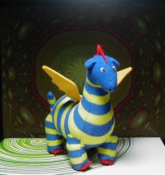

エルマーのぼうけん ぬいぐるみ ボリス Ｓ

『エルマーのぼうけん』のりゅうくんことボリスのぬいぐるみです。1997 年の劇場版公開の際に買ったもののはずです。メーカーはタグには Dreams come true CO.,LTD と書いています。高さは 15 cm。UFO キャッチャーのぬいぐるみのサイズです。 当時はストレスがたまっていたのですが、時間的余祐もない、というか、「時間的余裕」を感じる余裕もない……ということで、よくある話ですが、童話にはまっていました。特に Lisbeth Zwerger (リスベート・ツヴェルガー) の絵本が好きでした。 『エルマーの冒険』は劇場版の宣伝を見て、子供のころに好きだったのを思い出しました。この青と黄色のシマシマという幻想的な竜のデザインがいいですね。 映画は公開初日に観に行きました。映画だけあって絵も粗悪なものではなく、原作が好きな人には楽しめる出来だったと思います。ただ、インパクトが今一つだったようで、公開初日でも映画館が閑散としていました。そのためか、この後予定されていた続編も作られていないようです。 背景は Winamp の MilkDrop プラグインを WinShot したものを GIMP で色調を変えたものです。 更新：2006-03-17 初公開：2006年03月17日 17:35:19 最新版：2006年03月18日 06:20:42
Links: エルマーのぼうけん: http://www.amazon.co.jp/exec/obidos/ASIN/4834030709 (hbm) 劇場版: http://www.amazon.co.jp/exec/obidos/ASIN/B00005G2R7 (hbm) MilkDrop: http://www.milkdrop.co.uk/ (hbm) WinShot: http://www.woodybells.com/winshot.html (hbm) GIMP: http://www.gimp.org/ (hbm)